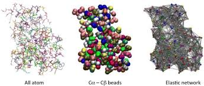
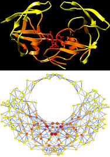
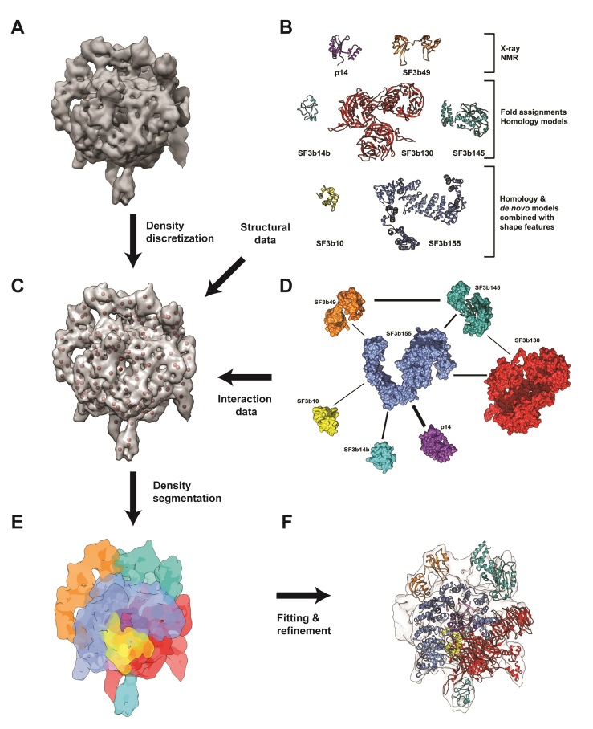
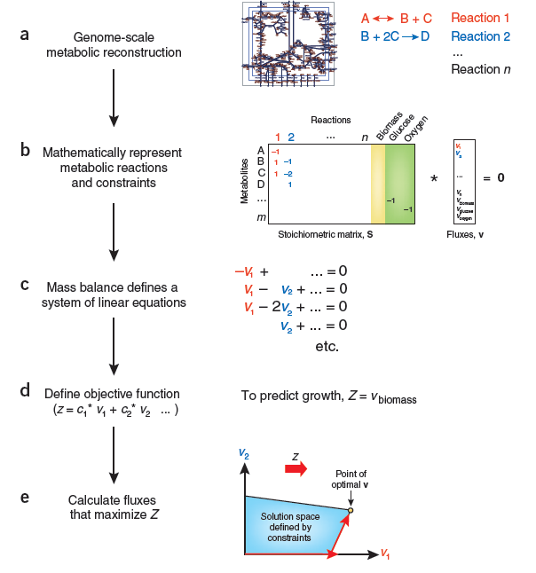
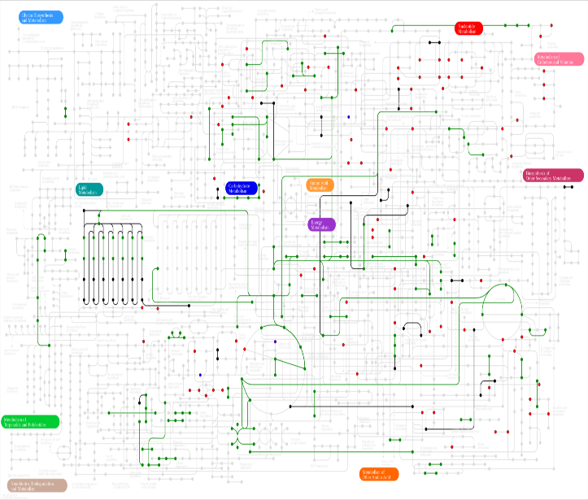

Network biology: Biomolecular structures, interactions, dynamics and implications in biological and metabolic pathways
Research group
Nagasuma Chandra and N. Srinivasan
Department of Biochemistry, IISc and Department of Biochemistry, IISc
Our groups offer variety of computational and mathematical biology projects in the general areas of structure, function, dynamics and interactions of biological molecules and assemblies, metabolic and signalling pathways, pathogens and their interactions with hosts, cancer etc. A sample set of projects is given here.
Gaussian normal mode and evolutionary analysis to probe allostery during biomolecular associations:
Often when two proteins interact change in structure or dynamics is observed far away from the binding site. We would like to recognize such allosteric events starting from the 3-D structures individual proteins and their complexes with other proteins. In order to recognize such sites, we use two approaches (1) We would perform Gaussian normal mode analysis which uses an elastic network representation of protein structures and using Kirchhoffs matrix of inter-residue interactions we obtain predictions on flexible and rigid regions in the structure. Molecular dynamics studies will also be employed (2) Further, we will probe the evolutionary conservation of such putative sites to predict functional relevance.

Recognition of determinants of a protein fold using graph network approach:
Many proteins of entirely different sequences adopt the same 3-D fold. The common feature that determines the same fold is not yet deciphered. In this project, we present 3-D structures of proteins of same fold as a network in which the nodes represent residues and edges represent interactions. We then employ structure-based alignment of proteins of same fold which will then be tailored with the networks of protein structures. Such an integration will allow us to recognize key determinants of protein fold formation and also aid recognition of folds starting from amino acid sequences.

Large molecular machines formed by macromolecular assemblies
3-D structures of large biomolecular assemblies are deciphered increasingly by cryo electron microscopic (cryoEM) techniques. In the recent times, resolution of such structures is typically in the range of 3 to 6 Angstroms. Therefore, fine level information is often unavailable. This project aims to formulate rules derived from the learning by analysing known high resolution structures of protein-protein complexes and using such rules in embedding atomic representation of biomolecular structures into cryoEM density maps. This process will be combined with standard steps such as flexible fitting, molecular dynamics, generation of multiple models using Gaussian normal mode analysis etc.

Modelling Biochemical Pathways and Genome-Scale Metabolic Networks
In a biological cell, several hundreds of biochemical reactions occur at any given point in time. Together, these reactions work as a well orchestrated whole, catering to the metabolic needs of the cell. A number of inter-dependencies and influences exist between different pairs of enzymes catalyzing the reactions, thus forming a complex network that has the ability to vary dynamically to suit the state of the cell. Mathematical modeling of individual pathways and the whole network will provide an in-depth insight into the underlying molecular mechanisms and help in understanding the metabolic activity under a variety of conditions resembling both health and disease.
The project will involve bioinformatics analysis of whole genome sequences of a selected organism, mathematical modelling including flux balance analysis, reconstruction and analyses of networks using graph theory and various other systems biology approaches. Besides gaining fundamental insights into cellular metabolism, the work has potential applications in drug discovery and biomarker identification.


|